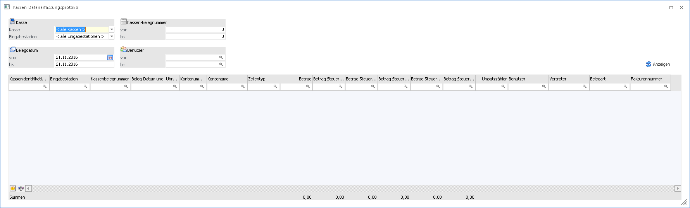
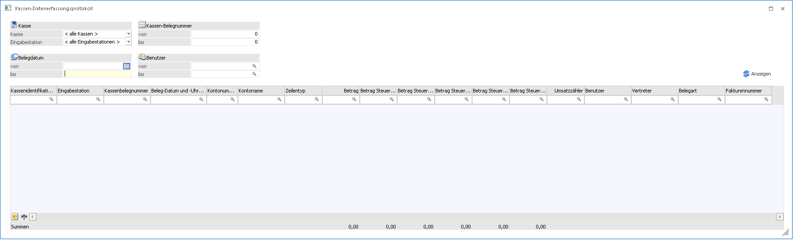
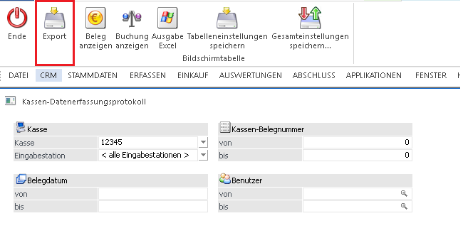
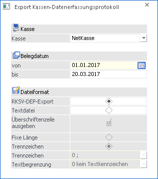

Das Datenerfassungsprotokoll (DEP) hat in der Verordnung des Bundesministeriums für Finanzen einen verbindlichen Aufbau und muss ab 1.1.2016 für alle Bargeschäfte geführt werden.
Im DEP sind alle Barrechnungen, welche mit einer Barbelegart erfasst wurden, ersichtlich.

Es stehen folgende Selektionsmöglichkeiten zur Verfügung:
Ø Kasse
Hier kann entschieden werden, welche Kasse (derzeit auf eine Kasse limitiert) und welche Eingabestation bei der Anzeige berücksichtig werden sollen.
Ø Belegdatum
In diesen Feldern kann eine Datumsbegrenzung eingestellt werden, welche bei der Ausgabe berücksichtigt wird. Beim Öffnen dieses Fensters wird der Eintrag "von" mit aktuellen Tagesdatum vorbelegt.
Ø Kassen-Belegnummer
Hier können die Belegnummer eingetragen werden, welche angezeigt werden sollen.
Ø Benutzer
Mit dieser Selektion wird die Ausgabe des Datenerfassungsprotokolls auf einem bestimmten oder mehrere Benutzer eingeschränkt.
Nach der gewünschten Selektion muss der Button Anzeigen gedrückt werden, damit die Auswertung ersichtlich wird.

In diesem Journal (DEP) wird ein Umsatzzähler mitgezählt und dieser Wert wird bei jedem Eintrag erhöht bzw. vermindert. Auch stornierte Barrechnungen sind im DEP ersichtlich.
In der Ribbon-Leiste steht der Button "Beleg anzeigen" zur Verfügung. Mithilfe dieses Buttons kann sofort der Beleg der selektierten Zeile angezeigt werden.
Zusätzlich befindet sich noch der Button "Buchung anzeigen" in der Ribbon-Leiste. Durch Anwahl dieses Buttons wird ein Fenster geöffnet. In diesem Fenster wird die zugehörige Buchung der selektierten Zeile angezeigt.
Mittels Button "Export" in der Ribbon-Leiste kann das Datenerfassungsprotokoll als txt-Datei exportiert werden.

Beim Drücken Dieses Buttons erscheint noch ein Fenster

In diesem Fenster kann einem Zeitraum (Belegdatum) eingegränzt und folgende Einstellungen für den Export getroffen werden.
Ø RKSV-DEP-Export
Wenn es sich um eine Kasse mit Signatur handelt, steht diese Option zur Verfügung. Mit dieser Option kann das DEP im gewählten Zeitraum in einem wie in der RKSV vorgeschriebenen Format, also im JSON-Format exportiert werden.
Ø Überschriftenzeile ausgeben
Mit aktivierter Option werden die Überschriftenzeilen beim Export nicht ausgegeben.
Ø Fixe Länge
Wenn diese Option aktiviert ist, wird beim Export eine fixe Länge vorgegeben und zwischen den einzelnen Export-Feldern gibt es keine eigenen Trennzeichen.
Ø Trennzeichen
Mit dieser Option kann selektiert werden, ob die Daten grundsätzlich mit einem Trennzeichen beim Export ausgegeben werden. Falls dies nicht gewünscht ist, kann die Option "Fixe Länge" selektiert werden.
Ø Trennzeichen
Wenn die grundsätzliche Option Trennzeichen aktiviert ist, kann hier per Drop-Down Box entschieden werden, welche Trennzeichen beim Export angelegt werden sollen.
Ø Textbegrenzung
Hier kann entschieden werden welche Textbegrenzung zwischen den einzelnen Export-Felder für reine Textfelder verwendet werden soll.